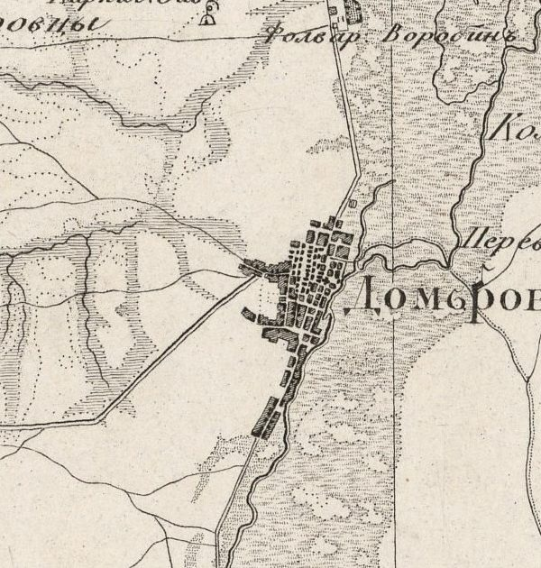
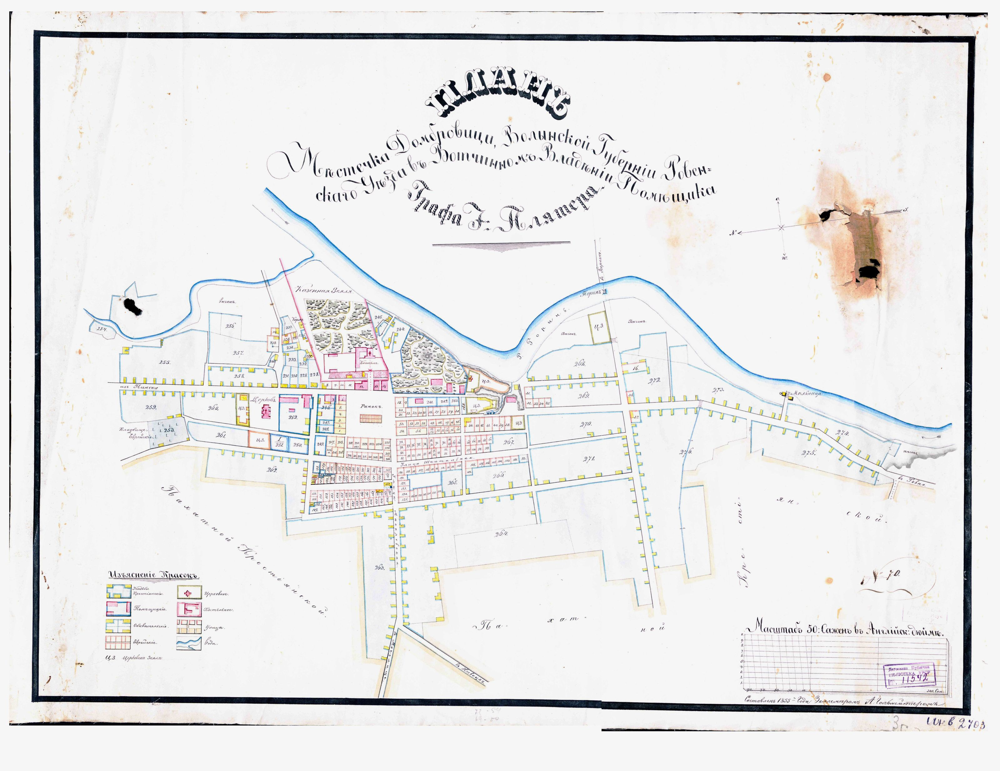

Люди Домбровиціпоіменно, за інвентарем графа Плятера
Опис міста кінця XVIII століття, складений вулиця за вулицею: хто жив у якому ряду, з ким під одним дахом, яким ремеслом заробляв.
- —
- дворів
- —
- людей названо в записах
- —
- вулиць, провулків і рядів
- —
- ремісників

Яким було місто, коли його описували двір за двором
Інвентар фільварку Воробин з містом Домбровицею складено вже за графа Юзефа Антонія Плятера, до якого Дубровиця перейшла в 1775–1776 роках. Рік на аркушах не збережено, тому документ датують широко: 1780–1820. Він і відкривається описом самого міста.
Місто лежить на підвищенні, на добрих ґрунтах, над Горинню. Мешканці торгують сіллю й іншим товаром і сплавляють його водою до різних литовських міст. Стоїть воно й на сухопутних трактах, що йдуть із Волині та України до Литви.
Переказ вступу до інвентаря, аркуш 00009318-47
Далі укладач веде читача так, як ішов би сам, — від ринку. Посеред міста площа з крамницями й шпихлірами; довкола неї чотири ряди будинків. З ринку розходяться вулиці: Воробинська на північ, Бережницька на південь, Замкова до церкви Святого Миколая й замку, дорога на Мочулище на захід. Місто обведене валом, а за ним на обох трактах лежать два передмістя: Воробинське — на Литовському шляху від Століна й Висоцька, і Бережницьке — на Волинському й Українському шляху від Бережниці.
Три групи міщан — три окремі нумерації
Укладач інвентаря рахував двори не підряд, а за трьома групами, кожну з першого номера. Ці номери — такі, як у документі, — стоять біля кожного двору в реєстрі нижче.
Дубровиця на плані 1855 року

План містечка Домбровиці Рівненського повіту, складений 1855 року у вотчинному володінні графа Плятера. Північ на плані ліворуч: так намальована роза вітрів у правому верхньому куті. Інвентар старіший приблизно на півстоліття, тож вулиці могли змінитися. Двічі торкніться плану, щоб наблизити; кнопка праворуч відкриває його на весь екран.
Прізвища, що повторюються
Натисніть прізвище — реєстр покаже всі двори й усіх членів родин, де воно трапляється. Цифра — кількість дворів. Для єврейських господарів інвентар здебільшого записує ім'я по батькові (Аронович — «син Арона»), тож такі форми тут не збираються в родини.
Ремесла
Заняття вписане лише біля частини імен — там, де воно відрізняло людину від сусідів або мало значення для повинностей.